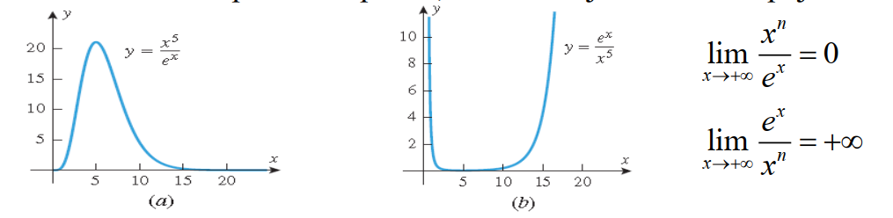

In this section we will discuss a general method for using derivatives to find limits. This method will enable us to establish limits with certainty that earlier in the text we were only able to conjecture using numerical or graphical evidence. The method that we will discuss in this section is an extremely powerful tool that is used internally by many computer programs to calculate limits of various types.
Во овој дел ќе дискутираме општ метод за користење на изводи при наоѓање на лимеси. Со овој метод ќе може да решаваме лимеси кои претходно можевме да ги претпоставиме нумерички или графички. Методот кој ќе го дискутираме е многу моќен и се користи во многу компјутерски програми за пресметување на различни видови на лимеси.
Неопределен облик од типот `0/0`
Да се потсетиме дека лимесот од облик
`lim_(x->a) f(x)/g(x)`
во кој `f(x) -> 0` и `g(x) -> 0` кога `x -> a` се нарекува неопределен облик од типот `0/0`.
Теорема 1
(Лопиталово правило за облик `0/0`) Нека `f` и `g` се диференцијабилни функции на отворен интервал што ја содржи `x = a`, освен можеби во x = a, и нека
`lim_(x->a)f(x) = 0` и `lim_(x->a)g(x) = 0`
Ако `lim_(x->a)[f^'(x) - g^'(x)]`постои или ако е `+oo` и `-oo`, тогаш
`lim_(x->a) f(x)/g(x) = lim_(x->a) f^'(x)/g^'(x)`
Уште повеќе, тврдењето е точно и кога `x ->a^-`, `x -> a^+`, `x ->-oo` или кога `x ->+oo`.
Пример 1.
Најди `lim_(x->2)(x^2 -4)/(x - 2)`
со користење на Лопиталово правило и направи проверка со разложување на множители.
Решение. Броителот и именителот имаат лимес еднаков на `0`, па имаме неопределеност од типот `0/0`. Со примена на Лопиталово правило добиваме
`lim_(x->2)(x^2 -4)/(x - 2) = lim_(x->2)(x^2 -4)^'/(x - 2)^' = lim_(x->2)(2x)/x = 4`
Ова е во согласност со резултатот добиен со разложување
`lim_(x->2)(x^2 -4)/(x - 2) = lim_(x->2)((x -4)(x + 2))/(x - 2) = lim_(x->2)(x + 2) = 4`
Пример 2. Потврди дека лимесите се неопределеност од типот `0/0` и пресметај ги со помош на Лопиталово правило.
а. `lim_(x->0) (sin2x)/x`
`lim_(x->0) (sin2x)^'/x^' = lim_(x->0)2cos2x = 2`
б. `lim_(x->pi/2) (1 - sinx)/cosx`
`lim_(x->pi/2) (1 - sinx)^'/(cosx)^' = (0 - cosx)/(-sinx) = 0/-1 = 0`
в. `lim_(x->0) (e^x - 1)/x^3`
`lim_(x->0) (e^x - 1)^'/(x^3)^' = e^x/(3x^2) = +oo`
г. `lim_(x->0^+) tanx/x^2`
`lim_(x->0) (tanx)^'/(x^2)^' = (1/cos^2x)/(2x) = +oo`
д. `lim_(x->0) (1 - cosx)/x^2`
`lim_(x->0) (1 - cosx)/x^2 = (0 + sinx)/(2x)`
Повторно броителот и именителот имаат лимес еднаков на `0`, па имаме неопределеност од типот `0/0`. Со повторна примена на Лопиталово правило добиваме
`lim_(x->0) (1 - cosx)/x^2 = sinx/(2x) = lim_(x->0) (sinx)^'/(2x)^' = cosx/2 = 1/2`
Неопределени облици од типот `oo/ oo`
Лимес на количник, `f(x) / g(x)`, во кој броителот и именителот имаат лимес `oo` се нарекува неопределен облик од типот `oo/oo`. Следната теорема која што ќе ја дадеме без доказ е верзија на Лопиталово правило кое се користи во пресметување на лимеси од овој тип.
Теорема 2
(Лопиталово правило за облик `oo/oo`) Нека `f` и `g` се диференцијабилни функции на отворен интервал што ја содржи `x = a`, освен можеби во x = a, и нека
`lim_(x->a)f(x) = oo` и `lim_(x->a)g(x) = oo`
Ако `lim_(x->a)[f^'(x) - g^'(x)]`постои или ако е `+oo` и `-oo`, тогаш
`lim_(x->a) f(x)/g(x) = lim_(x->a) f^'(x)/g^'(x)`
Уште повеќе, тврдењето е точно и кога `x ->a^-`, `x -> a^+`, `x ->-oo` или кога `x ->+oo`.
Пример 1. Потврди дека лимесот е неопределен облик од типот `oo/oo` и примени Лопиталово правило
`lim_(x->oo) x/e^x = (x)^'/(e^x)^' = 1/e^x = 0`
Анализа на растењето на експоненцијална функција
Ако `n` e позитивен број, тогаш `x^n ->+oo` кога `x->+oo`. Вакви степенски функции понекогаш се користат за да се опише колку брзо расте друга функција. На пример, знаеме дека `е^x->+oo` кога `x->+oo` и растењето на `е^x` е многу брзо; меѓутоа растењето на `x^n` е исто така брзо кога `n` е голем број, па разумно е да се запрашаме дали функциите `x^n`, за голем број `n`, растат побрзо или побавно од `е^x`. Еден начин да се испита ова е да се провери количникот `x^n/e^x` кога `x->+oo`. На цртежот лево е прикажан графикот на `y = x^5/e^x`. Графикот сугерира дека `x^5/e^x0` кога `x->+oo`, и ова повлекува дека функцијата `e^x` расте побрзо и количникот се намалува до нула. До истиот заклучок ќе дојдеме ако го испитаме однесувањето на количникот `e^x/x^5` кога `x->+oo` (цртежот десно). Функцијата `e^x` расте побрзо и количникот тежи кон `+oo`. Во општ случај, може да го примениме Лопиталовото правило за да покажеме дека `e^x` расте побрзо `x^n`, за било кој позитивен број `n`.
Двата лимеси се неопределени облици од типот `oo/oo` кои што може да се пресметаат со Лопиталово правило. На пример, за да го потврдиме првиот од овие два лимеси го применуваме Лопиталовото правило `n` пати. `n`-тиот извод на `x^n` e `n(n-1)(n-2)…1 = n!.` Според тоа, со примена на Лопиталовото правило `n` пати добиваме
`lim_(x->+oo) x^n/e^x = lim_(x->+oo) n!/e^x = 0`
Вториот лимес се определува аналогно.
Неопределени облици од типот `0* oo`
До сега дискутиравме неопределени облици од типот `0/0` и `oo/oo`. Меѓутоа тоа не се сите можности; во општ случај лимесот на израз кој има еден од облиците
`f(x)/g(x); f(x)*g(x); f(x)^(g(x)); f(x) - g(x); f(x) + g(x)`
се нарекуваат неопределени облици ако лимесите на `f(x`) и `g(x)` пооделно допринесуваат за неопределеност на лимесот на целиот израз. На пример, лимесот
`lim_(x->0^+)xlnx`
е неопределен облик од типот `0·oo` бидејќи лимесот на првиот множител е `0`, а лимесот на вториот множител е `oo`, а `0 * oo` не е дефинирано. Од друга страна, лимесот
`lim_(x->+oo) sqrt(x)(1 - x^2)`
не е неопределен бидејќи лимесот на првиот множител е `+oo`, а лимесот на вториот множител е `-oo`, па лимесот на производот е `-oo`.
Неопределени облици од типот `0 * oo` се пресметуваат со презапишување во облик на количник и примена на Лопиталово правило за неопределените облици `0/0` и `oo/oo`.
Пример 4. Пресметај
`lim_(x->0^+) xlnx`
`lim_(x->0^+) x/(1/lnx)` или `lim_(x->0^+) lnx/(1/x)`
Првиот лимес има неопределеност од типот `0/0`, а вториот лимес има неопределеност од типот `oo/oo`. Сепак вториот облик е позгоден бидејќи изводот на `1/x` е полесен за пресметување од изводот на `1/lnx`. Со примена на Лопиталово правило добиваме
`lim_(x->0^+) lnx/(1/x) = (lnx)^'/(1/x)^' = (1/x)/(-1/x^2) = -x = 0`
Неопределени облици од типот `oo - oo`
Лимесите кои водат до некој од изразите
`(+oo) - (+oo); (+oo) + (-oo); (-oo) - (-oo); (-oo) + (+oo)`
се наречени неопределен облик од типот `oo - oo`. Овие лимеси се неопределени бидејќи двата члена даваат неопределеност; еден се зголемува неограничено, а другиот се намалува неограничено. Лимесот кои се сведува на еден од изразите
`(+oo) + (+oo); (-oo) + (-oo); (+oo) - (-oo); (-oo) - (+oo)`
не дава неопределеност, бидејќи двата члена се согласни.
Неопределени облици од типот `oo - oo` понекогаш може да се пресметаат со сведување на неопределени облици `0/0` или `oo /oo`.
Пример 5. Пресметај
`lim_(x->0^+) (1/x - 1/sinx )`
Решение. Двете функции имаат лимес `+oo`, па изразот е неопределеност од типот `oo - oo`. Со сведување на заеднички именител добиваме
`lim_(x->0^+) ((sinx - x)/(xsinx))`
Овој лимес е неопределен од типот `0/0`. Со примена на Лопиталовото правило два пати добиваме
`lim_(x->0^+) (cosx - 1)/(sinx + xcosx) = (-sinx)/(cosx + cosx - xsinx) = 0/2 = 0`
Неопределени облици од типот `0^0`, `oo^0`, и `1^(oo)`
Неопределени облици од типот `0^0`, `oo^0`, и `1^(00)` понекогаш може да се решат со воведување на зависна променлива
`y = f(x)^g(x)`
и потоа да се пресмета лимес од `ln y`. Бидејќи
`lny = ln f(x)^g(x) = g(x)lnf(x)`
лимесот од `ln y` има неопределеност од типот `0* oo`. Ако го пресметаме лимесот на `ln y` лесно може да го најдеме лимесот на
`y = f(x)^g(x)`
Пример 6. Пресметај
`lim_(x->0) (1 + sinx )^(1/x)`
Решение. Започнуваме со дефинирање на зависната променлива
`y = (1 + sinx )^(1/x)`
и логаритмирање на двете страни